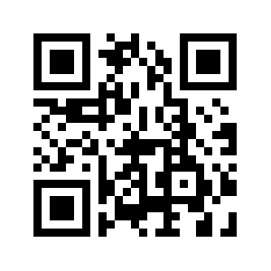

A APAE de Missal trabalha diariamente para transformar vidas por meio da educação, inclusão e suporte a pessoas com deficiência intelectual e múltipla. Sua contribuição, seja ela grande ou pequena, faz toda a diferença para continuarmos oferecendo serviços de qualidade e ampliando nosso impacto na comunidade.
Descubra como você pode fazer parte dessa história e nos ajudar a construir um futuro mais inclusivo e solidário.
Sua doação pode mudar vidas! Contribua com qualquer valor para nos ajudar a manter e expandir nossos projetos. Aceitamos doações financeiras, materiais e serviços que podem ser utilizados em nossas atividades diárias.
Para doar via PIX, escaneie o QR Code abaixo com o aplicativo do seu banco:
Chave PIX: chavepix@apaemissal.org.br
Ou entre em contato para saber mais sobre outras formas de doação.
Doar o seu tempo é uma das formas mais úteis de ajudar! Venha fazer parte da nossa equipe de voluntários e contribua diretamente para transformar vidas. Não importa sua habilidade, sempre há algo que você pode fazer: desde auxiliar em eventos até participar de nossas atividades diárias. Entre em contato e descubra como se tornar um voluntário da APAE de Missal.
Você sabia que compartilhar nossa causa é uma forma poderosa de ajudar? Use suas redes sociais para divulgar nossos projetos e ações. Quanto mais pessoas souberem sobre o trabalho da APAE de Missal, maior será o impacto que poderemos gerar juntos.
Use a hashtag #APAEdeMissal e marque seus amigos! A solidariedade é contagiosa, e cada compartilhamento pode atrair novos apoiadores.